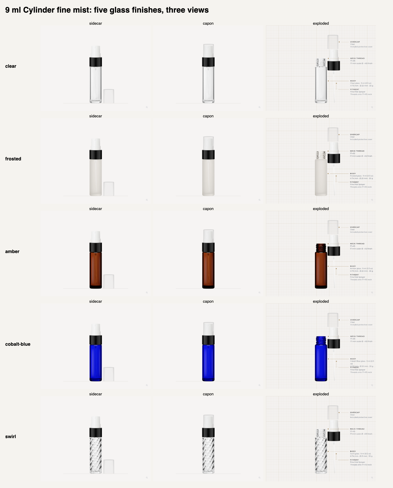

Approved shared overcap preserved. Swirl tube stays behind the glass when assembled and becomes visible when exploded. All 30 variants passed 90 stage checks.
Open Swirl product · Open the same bottle in the builder

2,125 exact selections checked across 19 families and 45 body choices. 2,098 have layered kits; 27 remain without one. This is a data and navigation audit, not visual approval of the whole catalog. All work is local.
| Family | SKU missing kit | Fitment | Finish |
|---|---|---|---|
| Boston Round | GBBstn15BlkCapSht | Screw Cap | Black |
| Boston Round | GBBstnAmb15mlBlkCapSht | Screw Cap | Black |
| Boston Round | GBBstnBlu15BlkDrpr | Dropper | Black Collar |
| Boston Round | GBBstnBlu15BlkCapSht | Screw Cap | Black |
| Circle | GBCrcl30SpryMattGl | Perfume Sprayer | Matte Gold |
| Circle | GBCrcl30SpryMattSl | Perfume Sprayer | Matte Silver |
| Circle | GBCrcl30SpryShnGl | Perfume Sprayer | Shiny Gold |
| Elegant | GBElg15MinarCu | Screw Cap | Matte Copper Minaret |
| Elegant | GBElg30SpryBlk | Perfume Sprayer | Black |
| Elegant | GBElg30SpryShGl | Perfume Sprayer | Shiny Gold |
| Elegant | GBElg30SpryShnSl | Perfume Sprayer | Shiny Silver |
| Diva | GBDiva46AnSpBlkRng | Vintage Bulb Sprayer | Black, Shiny Silver Collar, Jeweled Ring |
| Diva | GBDiva46AnSpIvySlRng | Vintage Bulb Sprayer | Ivory + Silver, Jeweled Ring |
| Diva | GBDiva46AnSpLvnRng | Vintage Bulb Sprayer | Lavender, Shiny Silver Collar, Jeweled Ring |
| Diva | GBDiva46AnSpRedRng | Vintage Bulb Sprayer | Red, Shiny Silver Collar, Jeweled Ring |
| Diva | GBDiva46AnSpTslBlkRng | Vintage Bulb Sprayer with Tassel | Black, Shiny Silver Collar, Jeweled Ring |
| Diva | GBDiva46AnSpTslIvySlRng | Vintage Bulb Sprayer with Tassel | Ivory + Silver, Jeweled Ring |
| Diva | GBDiva46AnSpTslLvnRng | Vintage Bulb Sprayer with Tassel | Lavender, Shiny Silver Collar, Jeweled Ring |
| Diva | GBDiva46AnSpTslRedRng | Vintage Bulb Sprayer with Tassel | Red, Shiny Silver Collar, Jeweled Ring |
| Elegant | LBElg100WhtClOvrCp | Lotion Pump | White rectangular pump, clear overcap |
| Flair | GBFlair15MinarCu | Screw Cap | Matte Copper Minaret |
| Flair | GBFlair15MinarSl | Screw Cap | Shiny Silver Minaret |
| Rectangle | GBRect10MinarCu | Screw Cap | Matte Copper Minaret |
| Rectangle | GBRect10MinarSl | Screw Cap | Shiny Silver Minaret |
| Royal | GBRoyal13MinarCu | Screw Cap | Matte Copper Minaret |
| Royal | GBRoyal13MinarSl | Screw Cap | Shiny Silver Minaret |
| Sleek | LBSlk30WhtRectClOverCap | Lotion Pump | White rectangular pump, clear overcap |